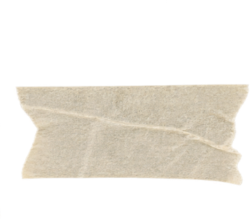

01 담당자에게 들은 것
세 번 이상 반복하면 선수가 답을 외우기 시작하거든요.
현업 담당자 · 인터뷰 중
그래서 다시 말해 보기는 2번까지로 막았습니다.
직접성구체성존중비공개 정보 지키기
판정 기준 네 가지는 코드에 박지 않고 담당자가 직접 고치는 파일로 뺐습니다.

02 다시 정한 문제
AI가 답변에 점수를 매긴다
고칠 곳을 2개만 짚고, 다음 답변에서 그곳이 달라졌는지만 본다
03 버린 것 5개
- 모범답안 보여주기담당자가 안 하는 방식
- 점수·등급 매기기평가가 아니라 비교가 목적
- 끝없이 다시 하기답을 외우게 됨
- 질문 자동 생성실제 질문을 담당자가 줌
- 여론 대응 연결제가 낸 안이었지만, 담당자가 연습 경험을 먼저 하자고 해서 뺐습니다
04 실제로 나온 결과
1차 답변
“다음 패치 때 로스터를 바꾸는 얘기가…”
2차 답변
“공개되지 않은 로스터나 다음 패치 이야기는 답하지 않겠습니다.”
비공개 정보를 짚은 뒤 2차에서 달라진 것을 확인한 기록 · 대회 중 출력 · 답변은 연습용 예시
근거를 못 대면 말하지 않습니다
답변 속 문장을 인용하지 못한 지적 2개는 화면에 내보내지 않고 버렸습니다. droppedCount: 2
05 담당자가 짚은 빈 곳
잘된 부분을 먼저 말하는 게 빠져 있어요.
→ 잘된 점 1개를 맨 위에 올렸습니다. 억지로 만들지 않고, 없으면 비워 둡니다.
06 아직 모르는 것
- 실제 선수가 써 본 적은 없습니다
- 전과 비교할 수치가 없습니다
- 질문과 답변은 연습용 예시입니다
- 음성 인식이 오류로 멈춰, 글자 입력으로 검증했습니다